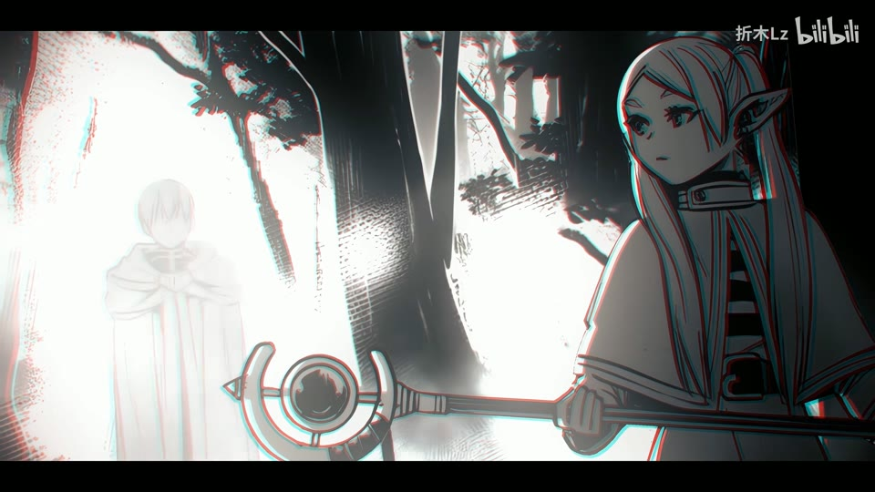
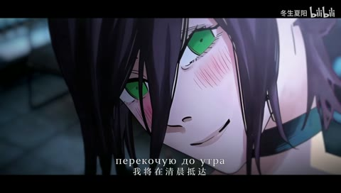
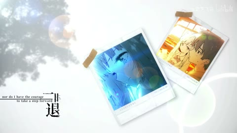

← 案例图谱H15 / 主要视觉研究样本
【芙莉莲/静止系MAD】想不想看花海盛开
折木Lz · 1314.3万播放快照 · ≥10万 · B站原作 ↗
餐桌上人物逐项消失与空间留空的关系，比花瓣数量更有表达力。试着通过“少了什么”理解时间和缺席。

约162.000秒 · 案例代表帧从画面里找依据
这一例先看什么
从留白漫画拼贴到花框、星空光轨、蓝花海与记忆餐桌，图像选择呼应角色与时间主题，原画轮廓和新背景层次结合。
审美判断
竖排文字与人物面部错开，蓝花海、白花地面和暗底书法有清楚主题焦点；发光/朦胧段的小字幕仍需保留对比。
迁移到自己的题材
漫画改编、人物回忆、纪念、故事提案、海报动态化、低动作但高情绪密度的段落。
教学提问：前景、中景、背景分别是什么？如果镜头移动，原图未画出的部分由谁补齐？
带画面的分析单元
图像标出取样时间，对应观察中的关键状态。单帧不能独立证明运动，连续性请结合摘录。表达作用与应用场景是教学解读，复现路线是建议，不是原作者工程还原。
分析单元 01 / 16—24秒
留白人物拼贴／竖排明体字／落叶前景
实际观察
白底人物远景、小幅竖字、近景人物与蓝色叶片层叠；24秒大号竖排字压在多人漫画前。
表达作用（教学解读）
把阅读顺序变成观看顺序；用字重、位置与停留表达强调、犹豫或压迫。
具体应用场景
观点短片、歌词视觉、人物宣言、章节、情绪高潮；先决定哪些词必须读懂，哪些只是纹理。
复现建议（非原作者工程还原）
准备透明人物图层，设位置缩放，文字按竖排排版；叶片沿不同速度和深度运动。
直出判断：规则合成容易，人物抠图与空间布局需准备
常见误用：每个字都弹跳、整句停留不足、所有文字同时争主位。严肃叙事里无理由的回弹会削弱重量。
分析单元 02 / 28—32秒
玫瑰装饰框／局部红光／暗场立绘
实际观察
28秒漫画边框布满花朵，手中剑或宝石局部发红；32秒人物被大形体围住并受方向光照。
表达作用（教学解读）
通过变化与稳定的比例让信息有轻重。视觉密度来自切镜、版式与局部动画三个层面，不只靠刀数。
具体应用场景
所有形式；尤其高潮前的蓄力、解释段的阅读、回忆段的停留和快慢对照。
复现建议（非原作者工程还原）
花框和人物分层、局部遮罩发光、亮度/投影渐变。
直出判断：基础合成容易，细节装饰与人物需素材
常见误用：全片等密度；把闪帧当新镜；高切速被当成质量分；没有稳定段供观众理解。
分析单元 03 / 37—39秒
暖冷闪光／局部去色／近景替换
实际观察
黑底竖字后切女性侧脸，暖光变冷色、又去色；38.2秒转到兜帽近景，亮光再次扫过。
表达作用（教学解读）
建立段落、材质和情绪的一致性；颜色变化可以承担信息，而不只是美化。
具体应用场景
多片源混剪、人物立场、回忆/现实区分、冷暖转折、品牌统一。
复现建议（非原作者工程还原）
原素材裁切、色温/饱和度关键帧、渐变曝光遮罩与少量RGB错位。
直出判断：容易；每次曝光变化不算换镜
常见误用：所有镜头同一滤镜；肤色被破坏；饱和度代替焦点；色彩含义前后矛盾。
分析单元 04 / 60—60秒
流星光轨／星空辉光
实际观察
人物背影前，多道白蓝弧光越过夜空，边缘微彩色。概览只确认形态。
表达作用（教学解读）
让能量、方向或主次可见；清楚的字芯和主体轮廓应保留。
具体应用场景
战斗、魔法、科技、梦境、舞台、标题强调、人物焦点。
复现建议（非原作者工程还原）
贝塞尔曲线或粒子轨迹加模糊、叠加发光，沿路径逐段揭示。
直出判断：基础版容易，美术密度和光感需调整
常见误用：只加大模糊半径；光源不影响周围环境；发光覆盖所有细节；把原片光效当新增。
分析单元 05 / 88—104秒
花海场景／悬浮花瓣／大字背景
实际观察
88秒蓝花与人物形成前后深度，100秒巨大的淡字占背景，104秒白花铺满人物脚下。
表达作用（教学解读）
把阅读顺序变成观看顺序；用字重、位置与停留表达强调、犹豫或压迫。
具体应用场景
观点短片、歌词视觉、人物宣言、章节、情绪高潮；先决定哪些词必须读懂，哪些只是纹理。
复现建议（非原作者工程还原）
花与人物拆层，实例化花片和景深；大字作为独立背景层。
直出判断：基本字效容易；高质量花海与角色抠图需要制作
常见误用：每个字都弹跳、整句停留不足、所有文字同时争主位。严肃叙事里无理由的回弹会削弱重量。
分析单元 06 / 94.5—96.5秒
黑闪分段／人物递减擦除／同场景叙事
实际观察
约94.76秒切多人餐桌；95.4–95.48秒黑场后回同位置，部分人物不见；96.28–96.36秒再次黑场后人物继续减少。
表达作用（教学解读）
利用相邻镜头改变理解，使原来无关的画面形成主题、对比或关系。
具体应用场景
纪念、广告、人物关系重组、旅行随笔、社会观点、品牌回顾。
复现建议（非原作者工程还原）
人物与背景预先拆层、补全遮挡区域，黑场时切换可见层。
直出判断：控制显隐容易；精确拆层和背景补画有工作量
常见误用：素材只因好看而排列；上下文失真；借剪接制造未经支持的事实判断。
分析单元 07 / 120—124秒
魔法阵发光／空气碎粒／人物前景
实际观察
明亮圆形符纹与光束从人物前方延展，细碎粒子漂浮；124秒人物近景前还有透明气泡。
表达作用（教学解读）
让能量、方向或主次可见；清楚的字芯和主体轮廓应保留。
具体应用场景
战斗、魔法、科技、梦境、舞台、标题强调、人物焦点。
复现建议（非原作者工程还原）
圆形线稿贴图、路径光束、粒子与透明前景多层合成。
直出判断：基础机制可做，复杂法阵与遮挡需调整
常见误用：只加大模糊半径；光源不影响周围环境；发光覆盖所有细节；把原片光效当新增。
分析单元 08 / 156—168秒
文字与人物交叠／灰阶森林／黑底单列字
实际观察
人物压在大号淡字前，之后画面转灰阶森林，再转黑底竖排名字，保留主题与空间对比。
表达作用（教学解读）
把阅读顺序变成观看顺序；用字重、位置与停留表达强调、犹豫或压迫。
具体应用场景
观点短片、歌词视觉、人物宣言、章节、情绪高潮；先决定哪些词必须读懂，哪些只是纹理。
复现建议（非原作者工程还原）
人物遮罩、排字、灰阶和分段切换；深度层次用分层或透视相机。
直出判断：基础版容易；统一风格和节奏需逐镜判断
常见误用：每个字都弹跳、整句停留不足、所有文字同时争主位。严肃叙事里无理由的回弹会削弱重量。
用连续画面核对
保留原研究的多段局部摘录。片段含音轨不代表已听审；本资料不评价音乐卡点或对白节奏。
短时变化怎样理解
94.5–96.5秒同餐桌人物递减配黑闪，强调信息消失而非高切镜率；37–39秒冷暖曝光变化也不逐次计刀。
把镜头连接、版式更新、局部图层变化和镜内运动分开记录。所查窗口是下限，不是全片平均或AI／人工排名。
原始逐窗记录 →这次练习的约束
一张有权使用的图片分三层，制作6秒镜头：先只推拉，再加视差，最后加一层前景；比较情绪是否更明确。
先写“我希望观众明白／感到什么”，再选本页的一种手法。完成无效果基础版后再加层；解释新增层带来的收益和代价。
打开练习与复盘表 →来源、观看范围与制作归属
实际检查范围：56张4秒间隔概览及37–39、94.5–96.5秒密集连续源帧已实际检查。220.608秒1080p25源，密集帧间隔0.08秒。未听审音轨。
制作线索：折木Lz；第一方页面1314.3万播放，注明原作《葬送的芙莉莲》及音乐来源。标题标为静止系MAD，作者后期与漫画原画分别归属。
边界：原漫画美术与新增合成分开；人物显隐机制容易，但要先拆人补全被遮背景。花海、准确人物蒙版和光照匹配需要素材制作，不能据播放量推断一键可做。
播放快照保存时间（UTC）：2026-10-20T06:05:16.741542+00:00。H30制作方式为推定；同源改编、仿作和转载依原记录标注。
原始案例记录 · 选样表把你的判断留下来
笔记仅尝试保存在本机浏览器；浏览器策略可能限制本地文件存储，重要内容请导出。
沿着同一问题继续阅读

H42漫画、纸张与记忆
冷灰漫画与紫发绿眼建立人物焦点；窗列和面部反打改变心理距离，雪和纸纹承担的是空气与记忆材质。
主要样本8个分析单元

H40漫画、纸张与记忆
胶带照片、手部细节与漫画条带将关系转化为可触摸的记忆；避免每一种情绪都用同一纸张模板。
主要样本8个分析单元
细节、反应与转折
跨作品素材、演奏细节与光环意象重组开放剧情；区分画面关系的新增与原片已有的光效、表演。
主要样本7个分析单元